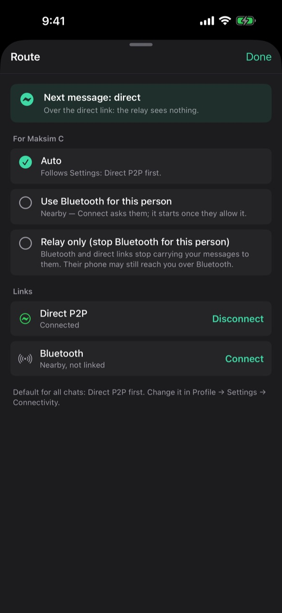

How your messages travel
Relay, direct or Bluetooth, and how to choose
The line under the name
In a chat, the line under the name tells how your next message goes: via relay, direct, or via Bluetooth.


Tap ⚡ to choose
The bolt opens Route. Pin this person to Bluetooth or to the relay only, or leave Auto: it follows Settings.
Relay first, by default
By default the relay goes first: on a weak network it is fastest. A Bluetooth link still wins. Change it in Settings → Connectivity.
Connect once
In Route → Links, Connect starts a direct link. It then comes back by itself until you tap Disconnect.
Earlier on this blog
From the guide in Viper 1.5.34: Profile → Settings → Help → Guides. All posts